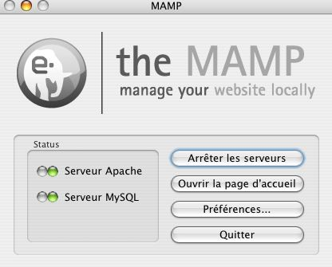
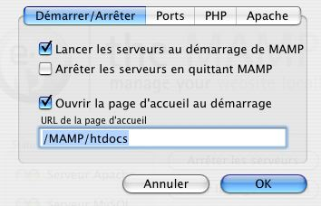
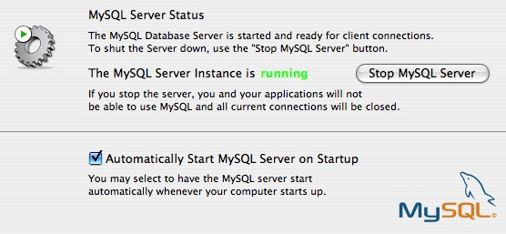
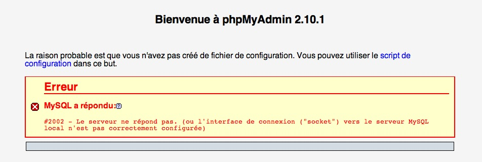
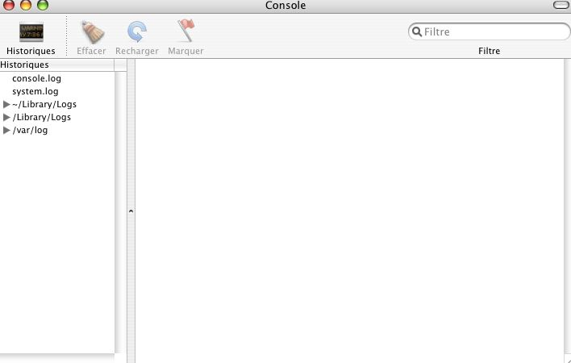
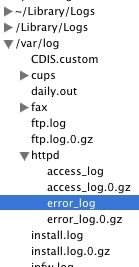

Je dis "mac-user", mais en réalité je m'adresse à une catégorie d'entre eux seulement : ceux qui développent leur site Web en local sous Mac OS X. C'est un usage précis, OK, mais bien utile ;) .
Le gros de ce tuto concerne la mise en place du serveur. Dans la dernière partie, nous verrons comment tirer profit du local, c'est le plus important après tout.
Comme vous le savez, il est plus prudent de mettre en ligne un site Web une fois qu'il est peaufiné et bien huilé. Tester son site en local est fortement recommandé avant chaque grosse mise à jour, afin de pourchasser les imperfections.
Mais quel est le principe du local ?
Il s'agit d'être votre propre hébergeur, votre serveur. Celui-ci ne sera accessible que depuis les autres ordinateurs connectés à votre réseau local par le même routeur que votre ordi (ce routeur est votre QuelqueChoseQuelqueChose Box).
Mac OS X dispose d'un serveur intégré. Les deux solutions abordées dans ce tuto en utilisent les ressources (pour en apprendre davantage, visitez le site officiel d'Apple), mais par des moyens très différents. Avant de poursuivre ce tuto, n'oubliez pas de vous rendre dans les Préférences Système, dans le panneau Partage, puis "Partage WEB Personnel".
Notre objectif : pouvoir visualiser en local un site utilisant les technologies PHP et MySQL, ainsi qu'Apache.
Passer à l'acte
Grosso-modo, vous disposez de 2 types de solutions.
Je me la coule douce
Cette solution consiste à télécharger MAMP ou tout autre logiciel pour installer votre serveur sur votre Mac. C'est un peu ce que M@teo21 explique pour EasyPHP sur PC. La partie "MAMP" du tuto y est consacrée.
Je bosse dur
Celle-ci va vous amener à bidouiller dans les /etc, les http.conf, et surtout à utiliser le terminal et les commandes UNIX. Les trois dernières parties du tuto vous guideront dans ce labyrinthe Unixien ^^ .
On choisit quoi ?
C'est à vous de voir, nous allons étudier les deux possibilités, mais je ne vous cache pas ma préférence pour la seconde ;) . Allez, commençons par apprendre comment installer MAMP.
MAMP signifie : Macintosh Apache MySQL PHP. Je crois qu'on ne peut pas faire plus explicite : c'est un logiciel qui vous permet d'installer Apache, Mysql et PHP sur Macintosh :D !
Comment MAMP procède-t-il ? Tout simplement en installant toutes ces technologies dans un dossier placé dans les applications. Il vous suffit alors de glisser-déposer des fichiers dans ce dossier pour envoyer votre site sur votre serveur local.
Le pour et le contre
MAMP présente surtout les avantages suivants :
installation aisée et rapide ;
centralisation de plusieurs technologies dans une seule interface.
Par contre, ce que l'on peut reprocher à ce logiciel :
démarrage de l'application pour lancer le serveur ;
au niveau de Mac OS, ce n'est pas très propre (nous verrons cela plus tard) ;
peu de finesse dans les réglages.
Je pense que MAMP s'adresse aux débutants en xHTML, PHP et MySQL qui n'ont pas envie de s'encombrer de manipulations supplémentaires, et on les comprend ! :-°
Installation
Pour télécharger MAMP, par ici. Choisissez en fonction de votre processeur, faites bien attention.
Une fois l'image disque ouverte dans le Finder, glissez le dossier MAMP dans votre dossier "Applications".
Une fois la copie terminée, placez les fichiers de votre site dans le dossier "htdocs" de MAMP.
À présent, lançons MAMP, l'application. Sous vos yeux ébahis o_O :

Interface principale de MAMP.
De gauche à droite :
les deux voyants indiquent l'état d'Apache et de MySQL. Vert pour "OK, ça va pour moi !" et rouge pour "Alerte (rouge ^^ ) !" ;
"Arrêter les serveurs" devient "Démarrer les serveurs" en fonction de leur état. Le nom des boutons parle de lui-même ;
"Ouvrir la page d'accueil" pour contrôler MySQL, mais aussi voir votre site, ... ;
"Préférences" pour paramétrer MAMP ;
"Quitter" pour entendre la 5ème symphonie de Beethoven version tzigane :lol: !
Utiliser MAMP
Les préférences
Cliquez sur "Préférences". Vous disposez de 4 onglets :

Les préférences de MAMP.
Démarrer/Arrêter : je vous conseille de démarrer les serveurs au démarrage, de ne pas les arrêter quand vous quittez et de supprimer le "MAMP" ou "MAMP/htdocs" compris dans le champ "page de démarrage" afin que le site en local s'affiche directement.
Ports : pour déterminer les ports de connexion, à ne pas changer normalement.
PHP : réglages du PHP. Laissez PHP 5, et activez les deux extensions qui peuvent s'avérer utiles.
Apache : là non plus, rien à modifier. Assurez-vous que htdocs est bien sélectionné.
Enregistrez les modifications apportées en cliquant sur OK.
Utiliser MAMP
Ouvrez la page d'accueil. Normalement, votre navigateur charge l'URL "http://localhost:8888/". Cela signifie : "Charge le site en local à partir du port 8888". Vous avez vu ? Je parle couramment l'URL ;) .
Accédons maintenant aux options proposées par MAMP en chargeant l'URL "http://localhost:8888/MAMP/". L'interface s'ouvre devant vos yeux encore une fois ébahis o_O . La première page est consacrée aux mots de passe à entrer dans vos requêtes MySQL. À présent, les options intéressantes :
Les options de MAMP.
PhpInfo : toutes les informations au niveau de la configuration de PHP.
eAccelerator : réglages de cette option censée augmenter la vitesse d'exécution des scripts. Est-ce vraiment efficace, je ne sais pas, mais bon, autant la laisser active.
phpMyAdmin : l'interface de contrôle de MySQL dont j'expliquerai le fonctionnement par la suite.
SQLiteManager : pour les connaisseurs. Ceux qui débutent, plus d'informations sur Def. SQLite et aussi ici ;) .
Voilà, comme promis ce fut court et efficace. Cependant, vous constaterez que MAMP est limité quand vous progresserez, vous passerez donc sans doute à l'étape suivante, à moins que vous ne vouliez sauter le pas sans plus attendre... :-° Dans ce cas, n'oubliez pas de désactiver MAMP.
Nous commencerons par activer le PHP, puis nous installerons MySQL. Mais avant, quelques mises au point siouplaît.
Parlons peu, mais parlons bien
Nous allons suivre une démarche totalement différente de ce qui précède (c'est-à-dire l'installation de MAMP). Il s'agit de deux moyens totalement différents d'avoir son serveur local sur Mac, ils marchent tout aussi bien l'un que l'autre et ne sont pas dépendants. Nous allons à présent procéder à une installation manuelle du serveur local.
Les points sur les i
Les avantages d'une installation manuelle sont :
une certaine propreté du point de vue de l'OS : nous allons vraiment exploiter le potentiel d'OS X et non pas le détourner comme avec MAMP ;
une liberté totale sur les réglages ;
la possibilité de voir ce qui se passe vraiment sur le serveur.
Précisons que cela peut être intéressant également si vous envisagez de vous investir dans les serveurs par la suite : ce que vous apprendrez ne vous sera pas inutile :) .
Bien sûr, l'inconvénient d'une installation manuelle est qu'elle plus longue et surtout, qu'elle peut être plus dangereuse. Toutefois, ne vous inquiétez pas, votre Mac n'explosera pas tant que vous bidouillez uniquement votre serveur (ou envoyez-moi une photo de votre ordinateur cramé ;) ).
Il est évident que ce type d'installation est destiné à des personnes plus expérimentées ou tout simplement intéressées. Vous savez que Mac OS X est réputé pour son interface graphique. Mais on parle souvent moins du système fonctionnel qui se cache derrière tout ça : c'est UNIX, auquel vous pouvez accéder grâce au Terminal (qui se trouve dans les utilitaires du dossier "Applications"). Nous allons beaucoup nous en servir tout au long de ce tuto.
Je tiens à vous avertir que les réglages que nous allons effectuer ne correspondent pas à des réglages de serveurs réels ! En effet, ce n'est pas le but de ce tuto, je serai parfois un peu plus négligent avec la sécurité.
La plupart des serveurs Unix se configurent à partir des dossiers /etc et /etc/httpd (en tout cas, c'est ce qui se passe sous Mac OS). Les deux fichiers à connaître sont php.ini et httpd.conf.
Mais voilà : sur Mac OS, ces dossiers sont invisibles ! :o Heureusement, le terminal nous permet d'y accéder simplement. Nous allons d'abord configurer le php.ini.
php.ini
Dans le terminal, nous allons ouvrir ce fichier avec la commande pico. Par défaut, ce fichier n'existe pas. En revanche, les réglages par défaut du serveur sont stockés dans un fichier nommé php.ini.default. Nous allons d'abord faire une copie de php.ini.default nommée php.ini.
sudo cp /etc/php.ini.default /etc/php.ini
On vous demande un mot de passe administrateur, entrez-le (ne vous inquiétez pas si des étoiles ne s'affichent pas au fur et à mesure). Ouvrons notre php.ini fraîchement créé.
sudo pico /etc/php.ini
Un véritable éditeur de texte apparaît sous vos yeux ébahis (à mon avis, il est bien meilleur que TextEdit) !
Dans cet éditeur, il faut faire défiler le texte à l'aide des flèches haut et bas, ou bien des raccourcis clavier [Ctrl + V] pour descendre rapidement, ou [Ctrl + Y] pour remonter rapidement.
Étape 1 : enlever les limitations au PHP
Pour nous déplacer encore plus vite, je vous conseille de taper [Ctrl + W], puis d'entrer le texte à rechercher dans le fichier. Le Terminal vous y mène immédiatement.
Allez donc directement à la ligne "disable_functions". Vous devriez arriver sur quelque chose de ce genre :
; This directive allows you to disable certain functions for security reasons.
; It receives a comma-delimited list of function names. This directive is
; *NOT* affected by whether Safe Mode is turned On or Off.
disable_functions =
Cela pourrait brider des fonctions de PHP. Pour s'assurer que tout PHP est activé, rajoutez un point-virgule devant disable_functions =. Cela transforme cette instruction en commentaire (les commentaires dans les fichiers .ini commencent par ;).
En descendant, vous devriez tomber sur :
; This directive allows you to disable certain classes for security reasons.
; It receives a comma-delimited list of class names. This directive is
; *NOT* affected by whether Safe Mode is turned On or Off.
disable_classes =
De même, rajoutez un point virgule devant l'instruction disable_classes qui désactive certaines classes du PHP.
Étape 2 : allouer de la mémoire au PHP
Un peu plus bas, vous trouverez les instructions suivantes :
;;;;;;;;;;;;;;;;;;;
; Resource Limits ;
;;;;;;;;;;;;;;;;;;;
max_execution_time = 30 ; Maximum execution time of each script, in seconds
max_input_time = 60 ; Maximum amount of time each script may spend parsing request data
memory_limit = 8M ; Maximum amount of memory a script may consume (8MB)
max_execution_time = ... définit le temps maximum que prend l'exécution d'un script. Si cette limite est dépassée, le script s'arrête. max_input_time = ... définit plus ou moins les mêmes choses, nous n'entrerons pas dans les détails. définit le temps maximum que prend l'exécution d'un script. Si cette limite est dépassée, le script s'arrête. max_input_time = ... définit plus ou moins les mêmes choses, nous n'entrerons pas dans les détails.
memory_limit = ... accorde de la mémoire pour exécuter le script. À vous de voir jusqu'à combien vous êtes prêts à sacrifier !
Continuons ;)
Étape 3 : le fameux register_globals
Ce dernier a provoqué bien des crises de nerfs... :)
Je vous conseille de le désactiver, si ce n'est pas déjà le cas, en remplaçant le On par Off. Le register_globals concerne des problèmes de sécurité ou d'exécution du script, au niveau du contenu des variables non-initialisées. Depuis le PHP 4.2.0, le réglage standard est sur Off, et c'est quand même mieux comme ça. Pour plus de détails, consultez php.net.
Étape 4 : MySQL
Descendez jusqu'à [MySQL].
Observons :p !
Vous allez voir plein de mysql.default_quelquechose :
_port : définit le port d'accès pour MySQL ;
_socket : le nom de la socket par défaut ;
_host : adresse par défaut du serveur MySQL, utilisé pour les connections avec la base de données ;
_user : le nom de l'utilisateur par défaut de MySQL ;
_password : le mot de passe par défaut de cet utilisateur.
Si vous ne voulez pas définir quoi que ce soit par défaut, ce qui est possible, rajoutez des points virgules devant chaque instruction pour la rendre inopérante.
Une autre donnée intéressante peut être mysql.connect_timeout, pour définir le temps maximum d'une requête SQL. Si elle dépasse le temps imparti (en secondes), alors la requête s'arrête. Par défaut, la valeur est à 60 secondes.
Étape 5 : les sessions
Allez jusqu'à [Session], où vous allez pouvoir faire votre propre popote avec les sessions.
Remarquez que vous pouvez changer le temps par défaut d'expiration d'une session, où les infos sont stockées (/tmp), comment s'appelle le cookie de session ou la session (PHPSESSID), ...
À priori, vous n'avez rien à changer ici.
Enregistrer les modifications
Il ne vous reste plus qu'à enregistrer les modifications. En mode pico toujours, [Ctrl + X].
Le terminal vous demande de valider ou non vos changements. "y" pour oui, "n" pour non.
Et voilà :D !
Bien régler son PHP
Pour les besoins de votre site, vous pouvez très bien modifier quelques valeurs. Cependant, si par la suite vous souhaitez revenir à des valeurs normales, il vous suffit d'ouvrir le fichier php.ini.default, à ne surtout pas modifier ! Puis copiez les valeurs de php.ini.default vers le php.ini pour rétablir les réglages d'origine.
En cas de besoin, revenir en arrière peut s'avérer intéressant, voire vital.
httpd.conf
Nous allons enfin mettre en route le PHP ! Youpi ! À vos terminaux !
sudo pico /etc/httpd/httpd.conf
Vous venez d'ouvrir le fichier qui gère votre serveur... o_O
Étape 1 : activons PHP et mod_rewrite
Descendez. Vous allez tomber sur une suite de bibliothèques dont voici le début :
Ces lignes correspondent aux options activées dans les dossiers où se trouve votre site. Tout dépend de ce que vous voulez faire (ici, le serveur peut juste suivre des liens symboliques). Dans un premier temps, mettez "All" pour tout activer (sauf MultiViews), comme ceci :
<Directory />
Options All
AllowOverride None
</Directory>
<Directory />
Order deny,allow
Deny from all
</Directory>
Interdire l'accès au dossier du site.
<Directory "/Library/WebServer/Documents">
doit aussi être changé par le nouveau chemin que vous avez choisi.
Étape 3 : quelques options
Nous arrivons à une ligne comme ci-dessous :
Options Indexes FollowSymLinks MultiViews
Laissez-la comme telle, ou remplacez par All si vous souhaitez être tranquilles :
Cette ligne vous permet de définir quelles sont les pages index validées (en précisant leurs extensions). Vous pouvez aussi définir la priorité d'un index par rapport à un autre.
Par exemple, dans ce cas, si index.php, index.htm et index.html se trouvent dans le même dossier "sdz", si je charge l'URL "http://localhost/sdz/", j'obtiendrai la page index.php, prioritaire par rapport à index.html et index.htm. De même, si je supprime index.php, alors c'est index.htm qui s'affichera. À vous de voir quel ordre vous convient, mais de préférence évitez de mélanger les index, ça ne fait pas bon ménage.
Étape 4 : autorisez les .htaccess
Pour autoriser les .htaccess et autres, remplacez l'instruction
# This controls which options the .htaccess files in directories can
# override. Can also be "All", or any combination of "Options", "FileInfo",
# "AuthConfig", and "Limit"
#
AllowOverride None
par
# This controls which options the .htaccess files in directories can
# override. Can also be "All", or any combination of "Options", "FileInfo",
# "AuthConfig", and "Limit"
#
AllowOverride All
Pour finir, enregistrez
[Ctrl + X], puis tapez "y". Voilà ! Vous avez quitté le mode pico et votre serveur gère désormais le PHP.
En cas de besoin ou de fausse manip ( :-° ), n'hésitez pas à récupérer le fichier httpd.conf.default pour repartir sur de bonnes bases. Ne le supprimez pas !
Des idées pour améliorer
Je viens de vous guider pour activer PHP. Mais ces fichiers, notamment le dernier, permettent un haut niveau de personnalisation. Il vous est par exemple possible d'activer le Perl, de définir une adresse mail du webmaster, ... Les commentaires sont en général nombreux et clairs pour ceux qui comprennent l'anglais, et au cas où vous vous demanderiez à quoi sert telle ou telle option, une petite recherche suffira à vous documenter. Il ne faut donc pas avoir peur d'expérimenter quelques trucs, ça peut toujours être intéressant.
Relancer le serveur
Il faut, pour qu'Apache prenne en compte nos modifications, redémarrer le serveur.
sudo apachectl graceful
.
Après ce brillant redémarrage, faites une copie des fichiers de votre site et mettez-les dans votre dossier "Server", ou celui que vous avez choisi. Puis, dans votre navigateur chargez l'URL "http://localhost/". De trois choses l'une. Soit votre page d'accueil s'affiche et vous sautez au plafond, soit vous ne voyez rien, et une erreur s'affiche ou encore votre Mac prend feu, et vous me lynchez. :D
Normalement, tout doit fonctionner correctement. N'hésitez pas à recommencer la configuration du httpd.conf en repartant du httpd.conf.default au besoin.
En bas de la page, il y a de quoi télécharger pour Mac OS X. Choisissez en fonction de votre OS X.x et de votre processeur en version standard.
Il suffit ensuite d'ouvrir l'image disque et de la monter dans le Finder. Ouvrez les deux packages qui s'y trouvent, puis ouvrez le panneau de Préférences Système s'y trouvant. Celui-ci s'installe alors, comme ci-dessous :

Voilà :D !
phpMyAdmin
Nous allons installer phpMyAdmin comme gestionnaire MySQL. Téléchargez-le ici, dans la langue de votre choix. Choisissez bien la version qui correspond à votre OS.
Renommez en "phpmyadmin" le dossier obtenu après dézippage de l'archive phpmyadmin dans le dossier où sont stockés les fichiers de votre site (dans mon cas "/Library/WebServer/Server").
Ouvrons maintenant dans notre navigateur l'URL suivante : "http://localhost/phpmyadmin". Normalement, vous obtenez ce message d'erreur :( :

En effet, nous n'avons pas spécifié la configuration de notre serveur à MySQL. Il faut créer, à la racine de "phpmyadmin", un fichier nommé "config.inc.php" sur le modèle de "config.sample.inc.php".
À présent, dans ce fichier, vous pouvez spécifier votre configuration. Je vous recommande le modèle minimaliste ci-dessous :
$cfg['blowfish_secret'] = 'ma_phrase_d_encodage'; // À remplacer par la phrase de votre choix
$cfg['Servers'][$i]['auth_type'] = 'cookie'; // Mode d'identification par phpmyadmin
$i = 0;
$i++;
$cfg['Servers'][$i]['host'] = 'Localhost'; // Attention à la majuscule : essayez les deux (avec une minuscule, puis une majuscule)
$cfg['Servers'][$i]['port'] = ''; // Le port de connexion par défaut
$cfg['Servers'][$i]['socket'] = ''; // Le socket par défaut
$cfg['Servers'][$i]['connect_type'] = 'tcp'; // Le mode de connexion par défaut
$cfg['Servers'][$i]['compress'] = FALSE;
$cfg['Servers'][$i]['controluser'] = '';
$cfg['Servers'][$i]['controlpass'] = '';
$cfg['Servers'][$i]['user'] = 'madmac'; // Nom d'utilisateur
$cfg['Servers'][$i]['password'] = 'monsupermotdepasse'; // Mot de passe
Enregistrez ce fichier, puis rafraîchissez la page dans votre navigateur : phpMyAdmin est lancé :) .
Maintenant, deux trois explications sur le local, dans le cas d'une installation manuelle.
Gestion du chmod
Dans le terminal (encore lui ! ;) ) tapez la commande chmod XXX chemin/dossier/truc/fichier.php. Par exemple, je veux mettre le dossier sdz en chmod 777 :
chmod 777 /Library/WebServer/Server/sdz
Tantan ! :p
Créer un .htaccess
Utilisez la commande pico !
Exemple :
pico /Library/Webserver/Server/.htaccess
Je tape mes directives, puis je ferme ([Ctrl + X]). J'appuie sur "y", puis j'appuie sur Entrée pour valider le nom de fichier (".htaccess"). Procédez de même pour un .htpassword par exemple ! :)
Localhost et autres
"http://localhost" vous permet d'accéder au serveur local de l'ordinateur sur lequel vous vous trouvez. "http://leNomDeLOrdinateur.local" vous mène au serveur local d'un ordinateur en particulier de votre réseau. De préférence, utilisez "http://NomDeLOrdinateur.local" plutôt que localhost. Vous pouvez aussi entrer votre adresse IP locale.
Pour terminer, la console !
Voilà un dernier outil peu connu d'OS X : la console qui répertorie tout ce qui se passe dans OS X. Nous allons ainsi pouvoir visualiser toutes les requêtes effectuées par le serveur, et éventuellement comprendre un bug :) .
La Console se trouve elle aussi dans les Utilitaires de Mac OS. À son ouverture, voici ce que vous obtenez :

La Console
Parcourez le chemin suivant, et penchons-nous sur error_log dans httpd (ça ne vous rappelle pas quelque chose :D ?) :

Les logs !
Les erreurs
Error_log est un fichier qui stocke les erreurs enregistrées par le serveur sous la forme :
[date] [importance de l'erreur] texte à propos de l'erreur.
La date est précise à la seconde près, et ça peut vraiment être utile.
Il existe principalement 4 types d'erreurs. Par gravité croissante :
[notice] : c'est juste une remarque sur quelque chose de suspect, rien de bien grave ;
[warn] : attention ! C'est un avertissement. Ce n'est pas encore le bug total, mais il y a quand même un problème de moindre importance ;
[error] : c'est le bug ;
[boum] : votre serveur vient d'exploser :D (bien sûr, ça n'existe pas hein ?).
Quelques erreurs courantes :
[Mon Jan 15 11:48:52 2007] [error] [client 127.0.0.1] File does not exist: /Library/WebServer/Server/favicon.ico
Il manque un fichier à l'IP et au chemin spécifiés.
[Fri Dec 22 18:43:31 2006] [notice] Apache/1.3.33 (Darwin) PHP/4.4.4 configured -- resuming normal operations
Si vous avez modifié les fichiers de configuration Apache.
[Fri Dec 22 20:30:06 2006] [notice] caught SIGTERM, shutting down
Il s'agit d'un bug (pourquoi en notice, j'en sais rien :-° ) dû à Apache (plantage, redémarrage, ...).
Bref, toutes ces informations peuvent s'avérer nécessaires afin de localiser un problème quelconque dans l'affichage d'une page, d'une requête, ...
Les requêtes
Ouvrez le fichier access_log. Il contient de nombreuses informations sur toutes les requêtes effectuées par le serveur, sous la forme :
Adresse IP de la requête - - [date] "Type requête /chemin de la requête Type de requête HTTP" Numéro Apache correspondant
Par exemple, une erreur 404 sera reconnaissable par :
Bref, voilà de quoi vous aider à mieux interpréter les éventuels bugs que vous rencontrerez sur votre chemin ;) !
À présent, vous pouvez enfin tester votre site en local sur Mac tranquillement ! Bravo :D ! En espérant vous avoir été utile...
De plus, vous avez maintenant une petite idée de ce qu'il faut bidouiller quand on a affaire à un "vrai" serveur, ainsi que des petites astuces bien utiles de temps à autre.
N'oubliez jamais que le terminal est votre ami ! ;)